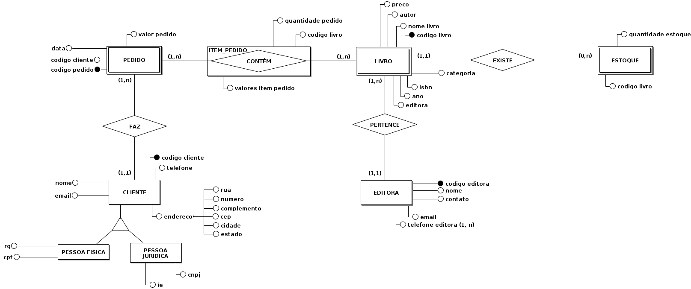
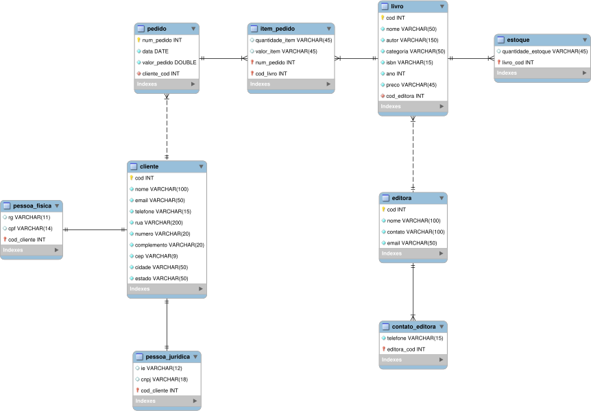

Contextualização
Uma livraria deseja implementar um software que gerencia as vendas da empresa. Para esse projeto foi proposto a utilização de um banco de dados relacional. Nosso papel dentro da equipe contratada para o desenvolvimento desse software é exatamente desenvolver o projeto de banco de dados. O projeto de modelagem de dados relacional passa essencialmente por três etapas: projeto conceitual, projeto lógico e projeto físico.
De acordo com um material do Prof. PhD. Clodoveu Davis publicado na Universidade Federal de Minas Gerais (anexo 1), na modelagem conceitual de dados a ênfase está na simplicidade e legibilidade. O objetivo da abordagem conceitual é capturar os requisitos do mundo real de uma forma simples e significativa que seja compreensível tanto para o projetista do banco de dados quanto para o usuário final.
Já no projeto lógico, o objetivo é detalhar o projeto conceitual, aproximando-se mais da fase de implementação. Em outras palavras, é transformar o "mini-mundo" criado na fase conceitual para um modelo mais próximo da linguagem dos SGBDs (Sistema de Gerenciamento de Banco de Dados). Por fim, o projeto físico é de fato a implementação do banco de dados idealizado no projeto lógico para um ambiente SGBD.
De uma forma geral, nos temos os seguintes inputs e outputs para cada fase do projeto:
- Projeto conceitual: mundo real → diagrama entidade-relacionamento (ER);
- Projeto lógico: diagrama ER → modelo relacional;
- Projeto físico: modelo relacional → modelo em SGBD.
Projeto Conceitual
A luz da abordagem proposta na contextualização, o projeto inicia-se pelo projeto conceitual. Uma vez compreendida a ideia do diagrama ER, para sair do mundo real e chegar no mini-mundo do diagrama ER não há muito mistério. Durante essa fase, a grande habilidade do projetista está no entendimento do negócio e tradução para o diagrama. Para essa finalidade foi utilizado no projeto o software BrModelo.
Após uma reunião com o cliente, objetivando a compreensão do completo funcionamento da livraria, assim como suas regras de negócio, algumas conclusões foram feitas.
- Os seguintes dados deverão ser coletados dos clientes: nome, telefone, endereço e email. Além desses, caso o cliente seja pessoa física será coletado o RG e CPF, e, caso seja pessoa jurídica, será coletado o CNPJ e IE;
- Os livros tem informações associadas: título, categoria, ISBN, ano de publicação, valor, editora e autores da obra;
- Os livros são fornecidos por editoras e é essencial que se tenha o nome da editora, nome do contato, email e no máximo 2 telefones.
- Um livro é exclusivo da editora, ou seja, não se pode ter o mesmo livro vindo de várias editoras;
- O cliente pode comprar um ou mais livros através de um pedido de compra. Mas sempre que ele faz uma compra precisa verificar-se se o livro existe em estoque.

Eis algumas informações pontuais relevantes sobre o diagrama:
- Observe que a entidade CLIENTE possui uma implementação de generalização/especialização, ou seja, a entidade CLIENTE possui duas outras entidades: PESSOA FÍSICA e PESSOA JURÍDICA. Conforme solicitado pela livraria;
- Note que a relação entre PEDIDO e LIVRO é na verdade uma entidade associativa. Isso ocorre porque a relação entre eles dois é de n:m exigindo, dessa forma, uma entidade intermediária. Nesse contexto, perceba que um PEDIDO contém um ou vários ITENS, e, da mesma forma um LIVRO pode estar contido em um ou vários ITENS (perceba a intermediação feita pela entidade associativa ITENS);
- As entidades PEDIDOS, LIVRO e ESTOQUE são entidades fracas, uma vez que elas necessitam de outras entidades para existir. Note que não existiria ESTOQUE se LIVRO não existisse, e, da mesma forma, não existiria LIVROS sem EDITORAS. Olhando agora para a outra entidade fraca, um PEDIDO não seria possível sem um CLIENTE. Essas definições serão essenciais na abordagem relacional, principalmente na definição das chaves primárias e estrangeiras.
Projeto Lógico
As atividades realizadas no projeto lógico podem ser consideradas as mais "burocráticas", uma vez que, várias regras são aplicadas na transformação do diagrama ER para o modelo relacional.
Além disso, obtendo-se o modelo relacional, deve-se ainda testar o modelo sobre alguns paradigmas e caso necessário, normaliza-las.
Começando pela ordem, primeiramente, deve-se realizar um mapeamento do diagrama ER, gerado no projeto conceitual, para um modelo relacional. Nesse contexto, será utilizado nesse projeto a abordagem sugerida pela Prof. Dr. Daniela Barreiro Claro (anexo 2). O modelo relacional foi realizado no próprio MySQL, mesmo SGBD da implementação, e como resultado temos:

Observações na transformação das entidades fortes:
- A entidade CLIENTE possui no diagrama ER uma implementação de generalização/especificação. Elas transformaram-se nas entidades fracas "pessoa_fisica" e "pessoa_juridica" no modelo relacional;
- O atributo composto "endereço" da entidade CLIENTE não aparece no modelo relacional, mas seus atributos descendentes sim;
- O atributo multivalorado da entidade EDITORA no diagrama ER tornou-se em uma nova entidade "contato_editora".
- A linha contínua ou tracejada indica se aquela relação identifica ou não a entidade "filha". Note que as entidades PEDIDO, LIVRO e ESTOQUE apesar de serem entidade fracas, possuem chaves primárias próprias que por si só as caracterizam.
- Primeira forma normal: diz-se que uma tabela está na primeira forma normal quando ela não contém tabelas aninhadas;
- Segunda forma normal: uma tabela encontra-se na segunda forma normal quando, além de estar na 1FN, não contém dependências parciais;
- Terceira forma normal: uma tabela encontra-se na terceira forma normal quando além de estar na segunda forma, não contém dependências transitivas;
- Quarta forma normal: uma tabela encontra-se na quarta forma normal, quando, além de estar na 3FN, não contém dependências multivaloradas.
Projeto Físico
O SGBD escolhido foi o MySQL. Nele, o modelo relacional poderia ser importado diretamente, gerando automaticamente todas as tabelas e as regras de negócio associadas. Entretanto, como o objetivo dessa publicação é demonstrar também as skills em SQL, será realizado a inserção manual por linhas de código. Para facilitar a visualização do código, foi utilizado o MySQL workbench, entretanto seria também possível a inserção do código diretamente no terminal.
Perceba que quando instancia-se um novo cliente na tabela cliente deveria-se especificar um tipo, pessoa física ou pessoa jurídica. E com isso, adicionar as informações equivalentes ou na tabela pessoa_fisica ou na tabela pessoa_juridica.
Entretanto, essas regras não serão implementadas diretamente no banco de dados, mas sim no software que utilizará o banco de dados. Portanto, nesse primeiro momento o projeto físico consiste apenas da criação das tabelas, sem utilização de triggers e procedures.
Abaixo encontra-se os códigos utilizados na criação das tabelas:
CREATE DATABASE LIVRARIA;
USE LIVRARIA;
CREATE TABLE cliente(
cod_cliente INT AUTO_INCREMENT,
tipo VARCHAR(50) NOT NULL,
nome VARCHAR(100) NOT NULL,
email VARCHAR(50) NOT NULL,
telefone VARCHAR(15) NOT NULL,
rua VARCHAR(200) NOT NULL,
numero VARCHAR(20) NOT NULL,
complemento VARCHAR(20) NULL,
cep VARCHAR(9) NOT NULL,
cidade VARCHAR(50) DEFAULT 'Natal',
estado VARCHAR(50) DEFAULT 'Rio Grande do Norte',
PRIMARY KEY (cod_cliente)
);
CREATE TABLE pessoa_fisica(
cod_cliente INT NOT NULL,
rg VARCHAR(11) NOT NULL,
cpf VARCHAR(14) NOT NULL,
PRIMARY KEY (cod_cliente),
CONSTRAINT fk_cliente_pessoa_fisica FOREIGN KEY (cod_cliente) REFERENCES cliente (cod_cliente)
);
CREATE TABLE pessoa_juridica(
cod_cliente INT NOT NULL,
cnpj VARCHAR(18) NOT NULL,
ie VARCHAR(12) NOT NULL,
PRIMARY KEY (cod_cliente),
CONSTRAINT fk_cliente_pessoa_juridica FOREIGN KEY (cod_cliente) REFERENCES cliente (cod_cliente)
);
CREATE TABLE pedido(
num_pedido INT AUTO_INCREMENT,
data_pedido TIMESTAMP DEFAULT CURRENT_TIMESTAMP,
valor_pedido DOUBLE NOT NULL,
cod_cliente INT NOT NULL,
PRIMARY KEY (num_pedido),
CONSTRAINT fk_cliente_pedido FOREIGN KEY (cod_cliente) REFERENCES cliente (cod_cliente)
);
CREATE TABLE editora(
cod_editora INT AUTO_INCREMENT,
nome VARCHAR(100) NOT NULL,
contato VARCHAR(100) NOT NULL,
email VARCHAR(50) NOT NULL,
PRIMARY KEY (cod_editora)
);
CREATE TABLE telefone_editora(
telefone VARCHAR(15) NOT NULL,
cod_editora INT NOT NULL,
PRIMARY KEY (cod_editora),
CONSTRAINT fk_editora_contato_editora FOREIGN KEY (cod_editora) REFERENCES editora (cod_editora)
);
CREATE TABLE livro(
cod_livro INT AUTO_INCREMENT,
nome VARCHAR(50) NOT NULL,
autor VARCHAR(150) NOT NULL,
categoria VARCHAR(50) NOT NULL,
isbn VARCHAR(15) NOT NULL,
ano INT NOT NULL,
preco DOUBLE,
cod_editora INT NOT NULL,
PRIMARY KEY (cod_livro),
CONSTRAINT fk_editora_livro FOREIGN KEY (cod_editora) REFERENCES editora (cod_editora)
);
CREATE TABLE item_pedido(
cod_livro INT NOT NULL,
num_pedido INT NOT NULL,
quantidade_item VARCHAR(45) NOT NULL,
valor_item VARCHAR(45) NOT NULL,
PRIMARY KEY (cod_livro, num_pedido),
CONSTRAINT fk_livro_item_pedido FOREIGN KEY (cod_livro) REFERENCES livro (cod_livro),
CONSTRAINT fk_pedido_item_pedido FOREIGN KEY (num_pedido) REFERENCES pedido (num_pedido)
);
CREATE TABLE estoque(
cod_livro INT NOT NULL,
quantidade INT NOT NULL,
PRIMARY KEY (cod_livro),
CONSTRAINT fk_livro_estoque FOREIGN KEY (cod_livro) REFERENCES livro (cod_livro)
);
Além disso o cliente requisitou que deixa-se preparado já no SGBD algumas views que serão mais utilizadas como:
- Top 10 livros mais pedidos;
- Top 10 Clientes em compras;
- Livros em falta no estoque.
## Top 10 livros mais pedidos
CREATE VIEW top10_livros AS
SELECT A.cod_livro, B.nome AS livro, B.autor, C.nome AS editora, B.ano, B.categoria, B.isbn, B.preco, count(*) AS contador
FROM item_pedido AS A
INNER JOIN livro AS B
ON A.cod_livro = B.cod_livro
INNER JOIN editora AS C
ON B.cod_editora = C.cod_editora
GROUP BY A.cod_livro, B.nome, B.autor, C.nome, B.ano, B.categoria, B.isbn, B.preco
ORDER BY contador DESC
LIMIT 10;
## Livros em falta
CREATE VIEW emfalta AS
SELECT A.cod_livro, A.quantidade, B.nome AS livro, B.autor, C.nome AS editora, B.ano, B.categoria, B.isbn, B.preco
FROM estoque AS A
INNER JOIN livro AS B
ON A.cod_livro = B.cod_livro
INNER JOIN editora AS C
ON B.cod_editora = C.cod_editora
WHERE quantidade = 0;
## Melhores Clientes
CREATE VIEW top10_clientes AS
SELECT A.cod_cliente, B.nome AS cliente, B.email, B.telefone, SUM(A.valor_pedido) AS total_pedido
FROM pedido AS A
INNER JOIN cliente AS B
ON B.cod_cliente = A.cod_cliente
GROUP BY A.cod_cliente, B.nome, B.email, B.telefone
ORDER BY total_pedido DESC
LIMIT 10